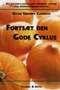

|
Onsdag 24. november, 1999  Den nye bog "Fortsæt den gode cyklus" - en opfølger til bogen "Breaking the Vicious Cycle" - skrevet af Oscar Umahro Cadogan, udkom på forlaget Thaning & Appel den 12. november 1999 til en pris af 199 kroner. (196 sider). . Her er adresserne, hvor du kan rekvirere bogen: Tlf 75 82 39 00, fax 75 82 32 71, email: kf@jto.dk Tlf 31 22 45 11, fax 31 22 28 48, email: thaning.appel@get2net.dk. Pressemeddelelse fra forlaget 5. november 1999 FORTSÆT DEN GODE CYKLUS af Oscar Umahro Cadogan Udkommer den 12. november 1999 Fortsæt den gode cyklus er først og fremmest ment som en opfølger til Bryd den onde cyklus, der bygger på den videnskabeligt anerkendte "Specifik kulhydratdiæt", men den tager også hensyn til de fødevareallergier og -intolerancer, mange mave-tarmpatienter ofte døjer med. Foruden gode råd om forskellige naturlige behandlingsformer indeholder bogen 80 spændende opskrifter på sund og 'ren' mad, der også vil kunne glæde raske mennesker, der bare ønsker ny inspiration i deres kost. Oscar Umahro Cadogan er med sine 22 år allerede en anerkendt kok. Han laver mad i TV2s Go'Morgen Danmark én gang om måneden, har været gæstekok på flere restau-ranter og er freelanceskribent for flere dagblade og magasiner, hvor han bidrager med sine opskrifter og skriver om ernæring, gastronomi, sundhed og sygdom. Oscar Umahro Cadogan rådgiver desuden kroniske mave-tarmpatienter i Århusområdet om kost og andre naturlige/holistiske behandlingsmuligheder, arbejder på at starte produktion af egne "meget rene" fødevarer og deltager som kostvejleder i brevkasse-panel for NetCafeen Mocca. I forbindelse med BogForum vil Oscar Umahro Cadogan levere brød til restauranten, og servere smagsprøver på forlagets stand (Stand 40), hvor der også vil være mulighed for at få en snak med forfatteren og få hans bog signeret. Med venlig hilsen Thaning & Appels Forlag Fortsæt den gode cyklus: 195 sider illustreret i farver, kr. 199,00 inkl. moms. |
{kind=link}